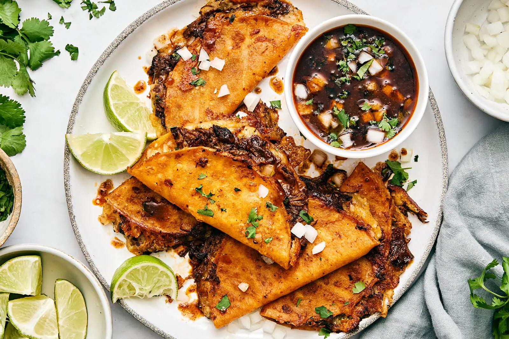

Past meals of the month
Birria Tacos

Just like last month's bibimbap, tacos provide a good amount of customisation. This month we made
this exceptional Birria Tacos. Try them out a let us know what you think

Bibimbap
Bibimbap is a staple Korean dish. Super nutritional with lots of vegetables that can be mixed an matched.
Personally, I prefer my Bibimbap with carrots, peppers, cucumber, courgettes, bean sprouts and beef.
Perhaps the most special part of bibimbap is the rice - It's even in the name! Bibimbap literally stands for
"mixed (bibim) rice (bab)". And perhpa the most fun part is the mixing! To enjoy bibimbap properly, add in some
gochujang and mix it all together.